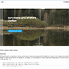
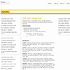
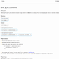
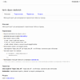
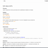

Наработки, примеры, пробы пера.
-

Простой jQuery слайдер с эфектом Fade. За счёт эфекта нет привязки к фиксированным размерам старницы. Можно легко использовать на адаптивной вёрстке.
-

Скрипт, в виде jQuery плагина, для фиксированного положения элемента на странице во время прокрутки страницы по вертикали.
-

Небольшой скрипт для изменения внешнего вида элемента <select> на странице. При этом выпадающий список оставляем нативный.
-

Небольшой скрипт для анимированного переключения табов на странице.
-

Скрипт, в виде jQuery плагина, для показа простых дизайнерских подсказок на странице.